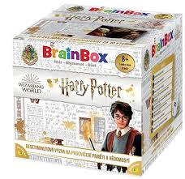

Doporučení
Podcasty
Fénixův řád
Podrobný průnik do světa čar a kouzel zprostředkovaný skrze mikrofon samozvaného Potterologa par excellence. Čtení knih o Harrym Potterovi kapitolu po kapitole s elektronickou tužkou za uchem. Rozbor všeho, co jste o brýlatém hrdinovi věděli i nevěděli. Podcast vychází každé pondělí, obsahuje spoilery a není určen pro děti.
Bradavický expres
Nastupovat! Bradavický expres právě odjíždí. Vydejte se semnou na cestu světem Harryho Pottera, kde si podrobně rozebereme všechny knihy, filmy, postavy, kouzla a mnoho dalšího. To vše a ještě více vás čeká každou neděli.
Potterova hodinka
Harry Potter je naše láska. Navždycky. Tématický podcast Andromedy a Brumbáry pro přátele a podporovatele Harryho Pottera s filozoficko-právnicko-psychologicko-nelogickými úvahami, kterými si krátíme čekání na dopis z Bradavic.
Deskové hry
Dobble Harry Potter
Hra kombinuje kultovní kouzelnický svět, vytvořený spisovatelkou J.K. Rowlingovou, s jednou z nejpopulárnějších rodinných her. Hráči se pokoušejí najít jeden společný symbol mezi dvěma kartami v hravé bitvě rychlosti a postřehu, jež obsahuje stylizované snímky Harryho Pottera, Hermiony Grangerové a Rona Weasleyho, kouzelnických hůlek, různých tvorů a bytostí, symbolů Bradavic a mnohé další.
Rychlost, postřeh, reflexy! Dobble, to je 57 různých symbolů, 55 karet, 8 symbolů na kartě a každé dvě karty spolu mají společný pouze jeden! Hra nabízí zcela unikátní zábavu. Hráči zde hledají dva stejné symboly na kartách při různých verzích hry (v pravidlech je popsáno celkem 5 her). Super jsou kulaté karty i jednoduchá pravidla vysvětlená doslova za pár sekund. Cílová skupina jsou děti i dospělí - všichni, kdo se chtějí pořádně bavit a nemají čas pročítat dlouhá pravidla. Plechová krabička zaručuje bezpečí karet a jednoduše umožňuje mít hru vždy u sebe. Vyzkoušejte i Vy postřehový fenomén Dobble a jistě budete překvapeni, jak i tak jednoduchá hra může být zábavná!
Desítka: Harry Potter
Desítka je vědomostní hra úplně nového typu. Ke každému okruhu ve hře přísluší 10 otázek a 10 možných odpovědí. Všichni hráči dostanou šanci odpovídat v každém okruhu otázek. Pokud odpovíte správně, získáte jeden z žetonů odpovědí jako bod. Když jste znovu na tahu, můžete hledat další správnou odpověď. V tu chvíli ovšem podstupujete riziko, že body získané dříve v tomto okruhu ztratíte. Budete hrát na jistotu, nebo riskovat?
Tato speciální edice přináší 100 okruhů, 1000 otázek a odpovědí, které prověří vaše vědomosti z filmové série Harry Potter.
Brainbox: Harry Potter
Jak dobře si pamatujete události z filmů o Harry Potterovi? Hra Brainbox: Harry Potter obsahuje karty s obrázky scén ze všech osmi filmů o Harry Potterovi, oblíbenými postavami, památnými momenty a nezapomenutelnými citáty, a navíc speciální karty obsahující vše od Nebelvíru po Ministerstvo kouzel.
Kouzelnické šachy
Šachová sada inspirovaná kouzelnickými šachy z filmu Harry Potter a kámen mudrců. Hrací deska je zdobená pevná lepenka, figurky jsou resinové (syntetická pryskyřice), precizně vyvedené.

Videohry
LEGO® Harry Potter: Years 1-4
Jako by dobrodružství Harryho Pottera nebyla už tak dost kouzelná, nyní budete moci jeho první čtyři roky v Bradavicích prožít v pojetí Lega. Můžete teď ovládat Harryho a desítky dalších známých postaviček, podobně jako tomu bylo u populárních her Lego Star Wars, Lego Indiana Jones a Lego Batman

LEGO® Harry Potter: Years 5-7
LEGO Harry Potter: Years 5-7 je pokrčováním zábavné hry o mladém kouzelníkovi. Její příběh je založen na dílech: Harry Potter a Fénixův řád, Harry Potter a Princ dvojí krve, Harry Potter a Relikvie smrti (první i druhá část). V průběhu děje se budete učit různým kouzelnickým schopnostem a míchání rozmanitých lektvarů. Budete moci odemknout i některé postavy z prvních čtyřech částí. Užijete si nové lokace, jakými jsou například Grimmauldovo náměstí, Ministerstvo kouzel a Godrikův důl. Budete narážet na nové tváře, hádanky i magii, které vám umožní utkat se s tím, jehož jméno nesmíme vyslov
Hogwarts Legacy
Milovníci Harryho Pottera zbystřete! Hogwarts Legacy je akční RPG hra otevírající dveře do světa čar a kouzel. Vytvořte si vlastního studenta, vyberte si školní kolej a připravte se na hodiny magie, péče o kouzelné tvory, přípravy lektvarů a mnoho dalšího. Vytvářejte nová přátelství, objevujte skryté chodby a prozkoumávejte blízké i vzdálené okolí bradavické školy. Zdání často klame a na pozadí bezstarostného studijního života číhá temná hrozba ohrožující celý kouzelnický svět. Vydejte se po stopách pradávného tajemství a odhalte, kdo se snaží kouzelnickou společnost uvrhnout do záhuby. Na strastiplné cestě za odkrytím pravdy vás čekají souboje s trolly, Temnými kouzelníky nebo záludnými skřety.